사진이 많아서 나눠서 올려봅니다 :)
우선 식사 종류 ^^
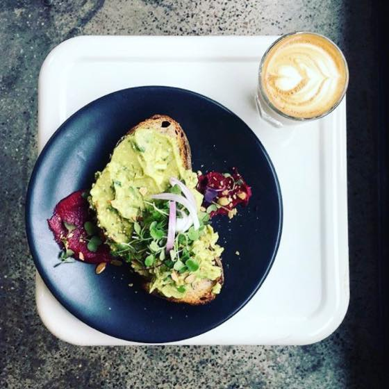
Citizens of Chelsea Cafe
일욜날 브런치 먹으러 간곳
첼시에 있는 카페인데 사람 많았어요 @_@
커피마시면서 30분정도 대기.
Smashing Avocado 에 Poached egg 추가
그리고 사진을 날려서(......) 웹사이트에 있는거 가져왔습니다.
빵이 좀 딱딱했는데 그래도 마시써요~~~ 아보카도 좋아 :D :D
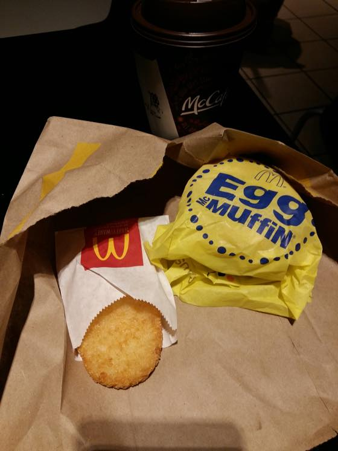
맥모닝
그냥 맥모닝 맛(.......) 그리고 커피가 정말 맛없었음 -_-;;
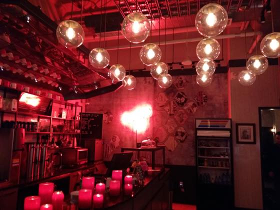
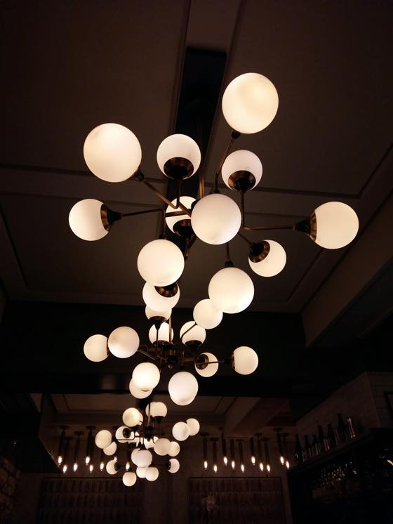
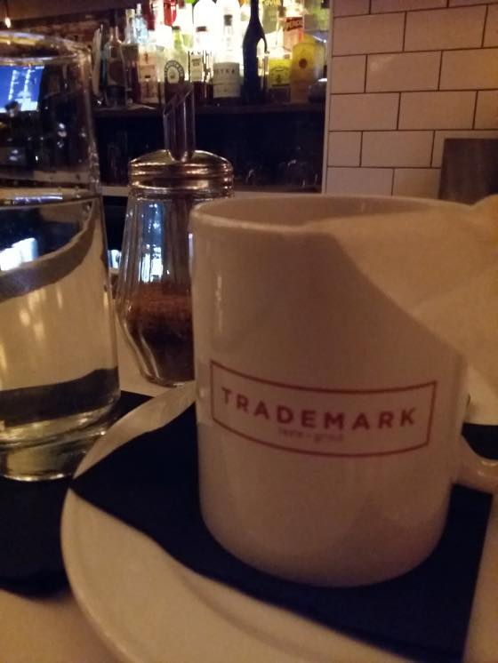
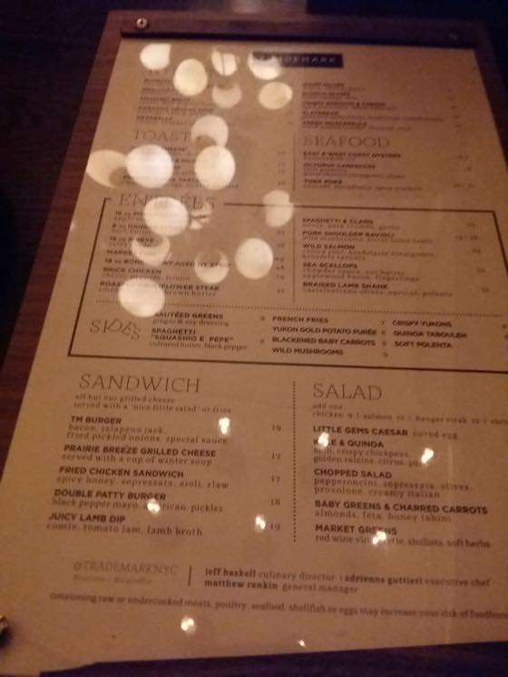
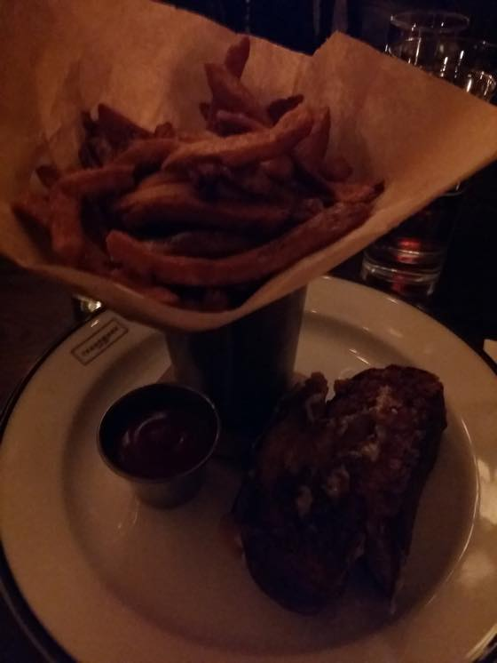
내부 인테리어가 정말 멋졌던 TRADE MARK taste + grind
내가 먹은건 PRAIRIE BREEZE GRILLED CHEESE
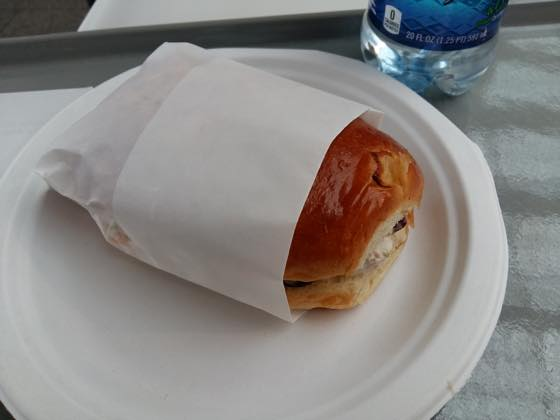
메트로폴리탄 뮤지엄 안에있는 카페에서 먹은 샌드위치
엄청 묵직했습니다
이때 느므 배고파서 정신없이 흡입했다능 ^^;;;
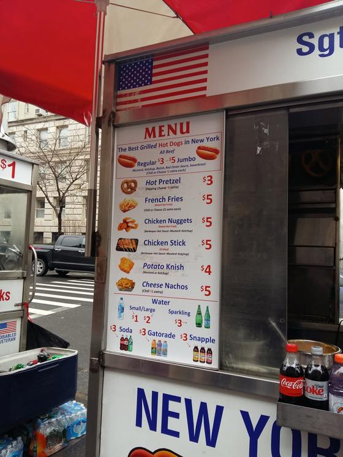
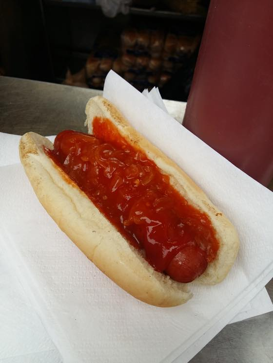
메트로 폴리탄 뮤지엄 바로 앞에있는 핫도그가게 :)
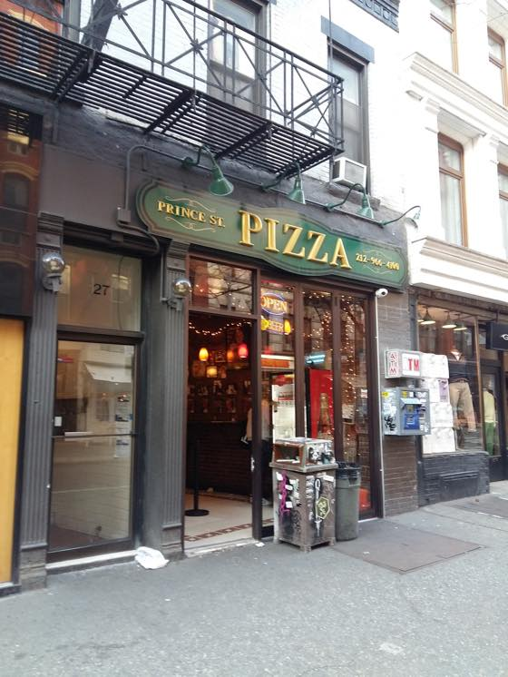
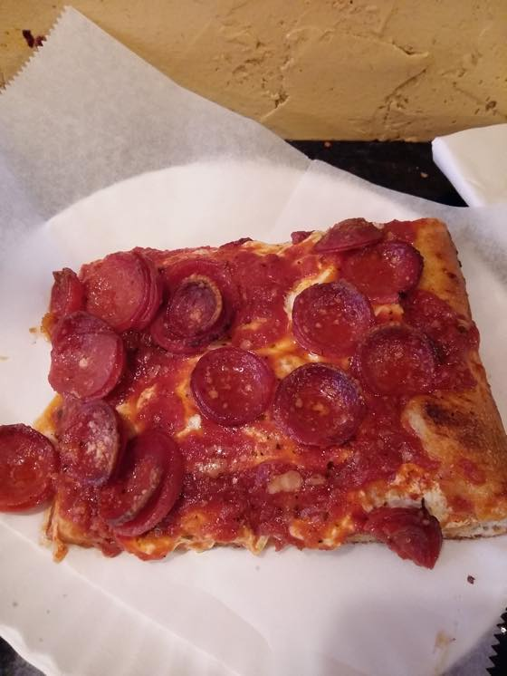
소호지역 돌아다니다가 검색으로 알아낸 Prince st PIZZA
와방 기름지고 두꺼운 페퍼로니 피자입니다 ㅋㅋㅋ
맛있어욤
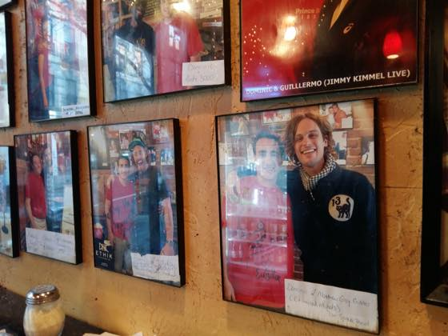
매튜 그레이 구블러 발견 +_+
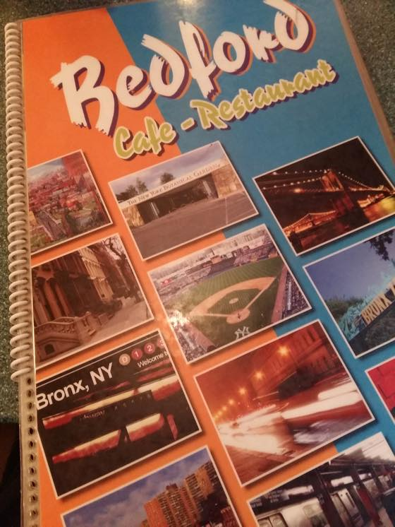
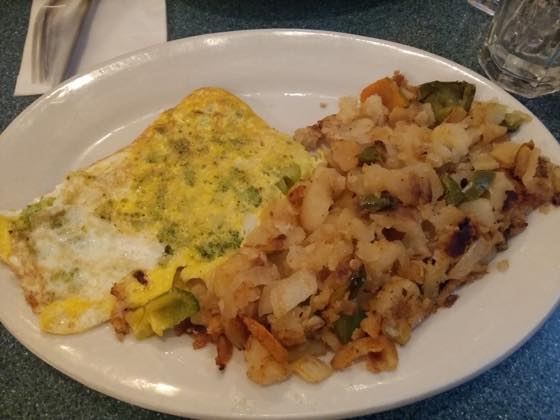
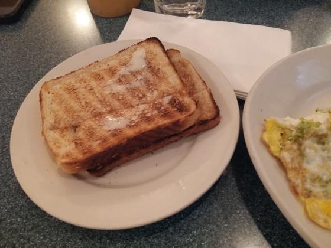
동네 식당에서 먹은 늦은저녁
브로콜리 오믈렛 + 토스트
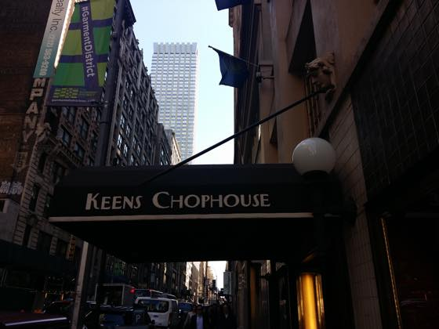
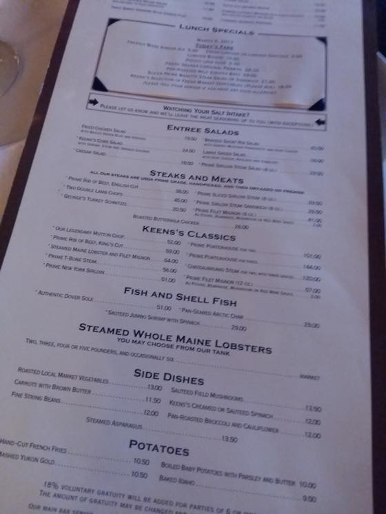
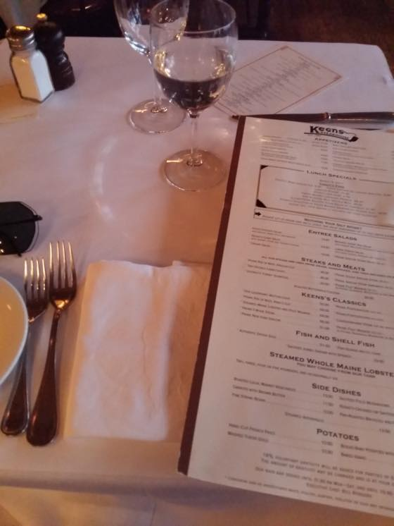
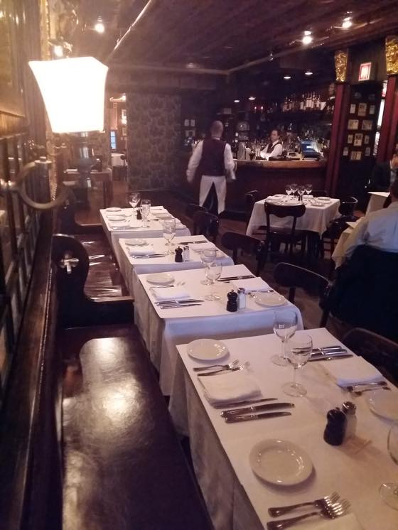
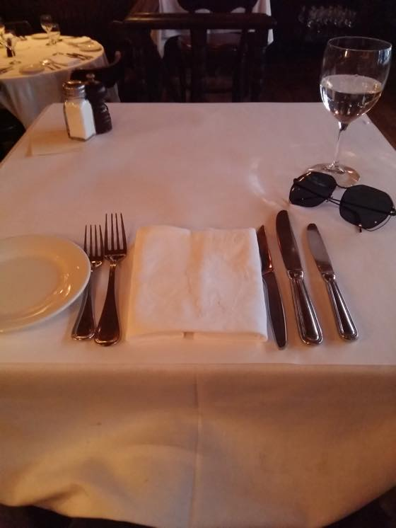
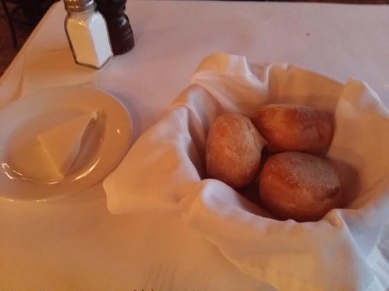
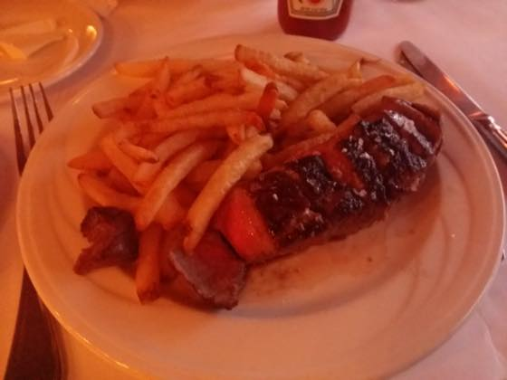
Keens Steakhouse
Prime Sliced Sirloin Steak (8 oz.)
여기도 검색하니 스테키로 유명한 곳이라네욤
양복입은 비지니스맨 잔뜩있는 평일점심에 혼자들어가서 한접시 다 비우고 나왔습니다 ㅋㅋㅋ